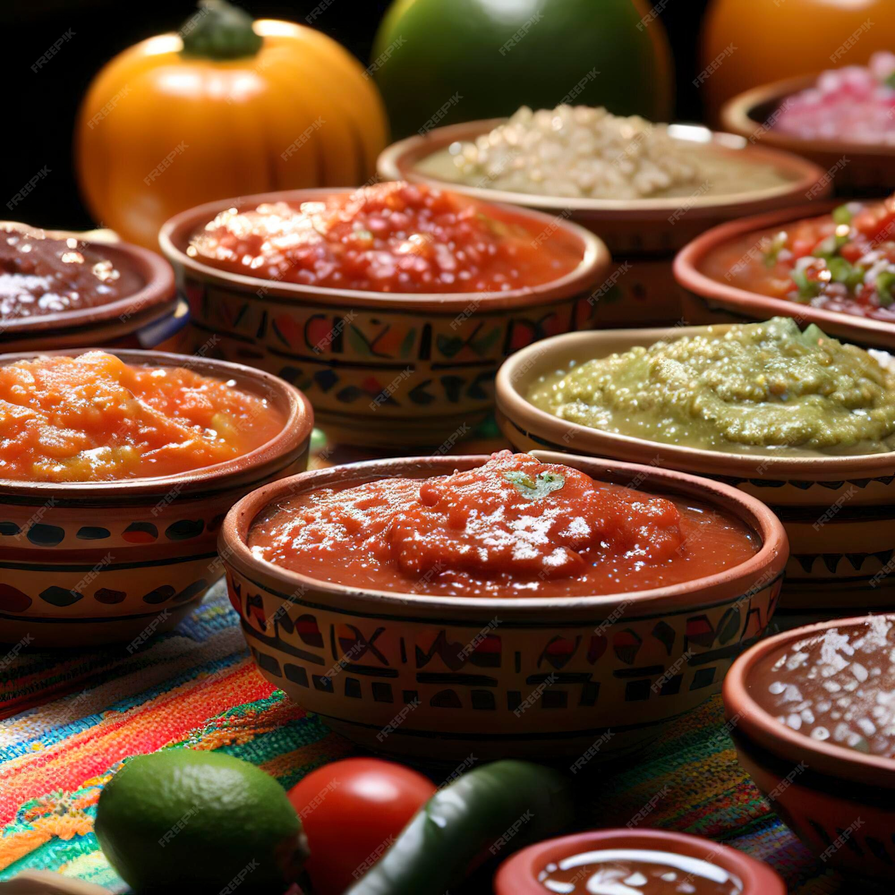

Mat jag älskar att laga




Jag började min karriär som kock på ett kryssningsfartyg i Karibien, där jag för första gången fick uppleva street food-kulturen på nära håll. Smakerna, dofterna och mötet mellan människor över enkel men välgjord mat fångade mig direkt. Sedan dess har jag arbetat på flera restauranger både i Sverige och utomlands, och alltid haft en särskild passion för kombinationen av traditionella recept och kreativa smaksättningar.
På Taco ’bout it ansvarar jag för menyn och för att leda vårt köksteam. Jag brinner för att utveckla nya rätter där färska råvaror och starka, balanserade smaker står i centrum. Mina favoritingredienser är självklart tomater, chili och koriander – de tre hörnstenarna i en riktigt bra salsa.
När jag inte står i köket gillar jag att resa för att upptäcka nya matkulturer, hämta inspiration från lokala marknader och ta med mig idéer hem till vårt kök. Målet är alltid detsamma: att varje gäst ska känna sig överraskad och nöjd när de lämnar restaurangen.
